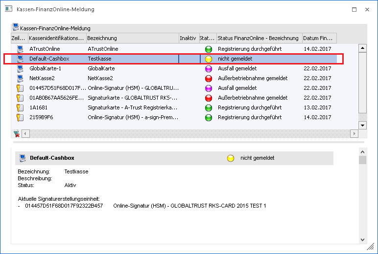
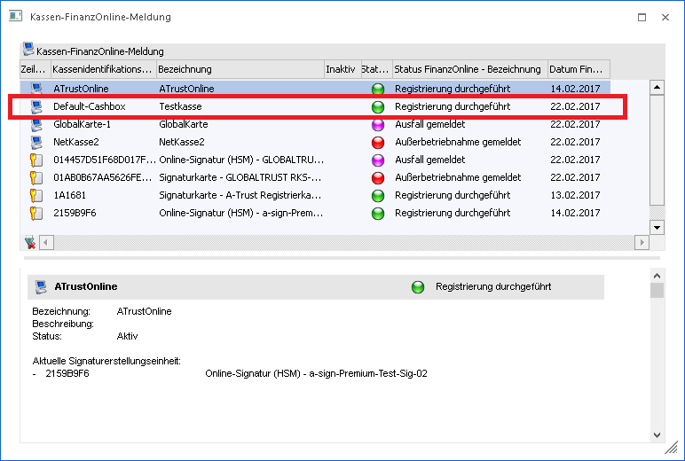

Schritt 3) Hier kann durch Anwahl des blau markierten Textes "FINANZOnline" die Internetseite des FinanzOnline-Portals direkt geöffnet werden.
Schritt 4) Falls schon einmal eine Meldung durchgeführt wurde, wird die ersichtliche Teilnehmer-ID mit der letzten Eingabe vorbelegt und kann über den Button "Teilnehmer-Nummer" kopieren, in die Zwischenablage kopiert werden und für die Anmeldung im FinanzOnline-Portal verwendet werden.
Im letzten Schritt 5) kann der Pfad der gerade erzeugten Datei in die Zwischenablage kopiert und im Finanz-OnlinePortal eingefügt werden. Die erzeugten XML-Dateien für FinanzOnline werden im Unterverzeichnis "FINANZOnline" des WinLine Verzeichnisses abgelegt.
Im Schritt 6) kann angegeben werden, ob die Datei erfolgreich hochgeladen/überprüft werden konnte, oder ob es einen Fehler bei der Übermittlung gegeben hat. Wenn hier keine Selektion getroffen wird, wird das Feld mit "Keine Angabe" was innerhalb der WinLine bedeutet, dass die Übermittlung erfolgreich war.
Wenn hier nämlich die Auswahl "Fehler bei der Übermittlung" gewählt und das Fenster geschlossen wird, wird der Status nicht im Hauptfenster der "Kassen-FinanzOnline-Meldungen" Rückgeschrieben. Der Status bleibt dann auf den letzten Stand vor Beginn der Meldung.
Hinweis:
Wenn der gerade angemeldete Benutzer keinen Webservice-Benutzer hinterlegt hat, ist die Option gegraut.
Status der Kasse nach einer Meldung mit "Keine Angabe" oder "Erfolgreich an FinanzOnline übermittelt":

Status der Kasse nach einer Meldung mit "Fehler bei der Übermittlung":
